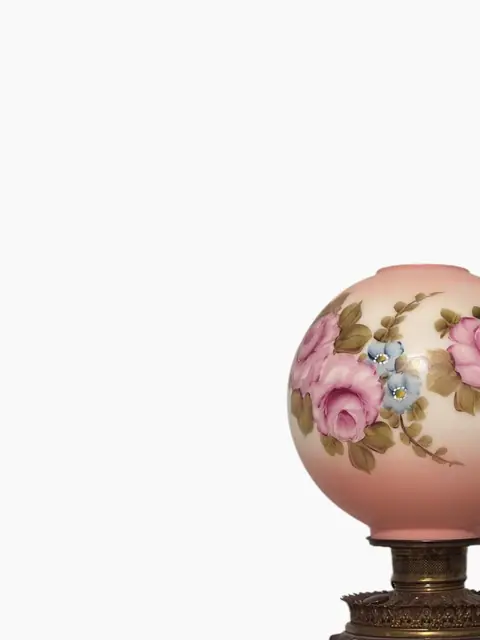
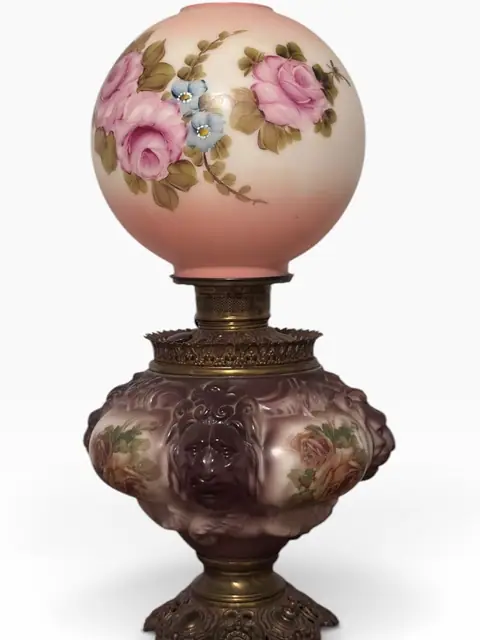
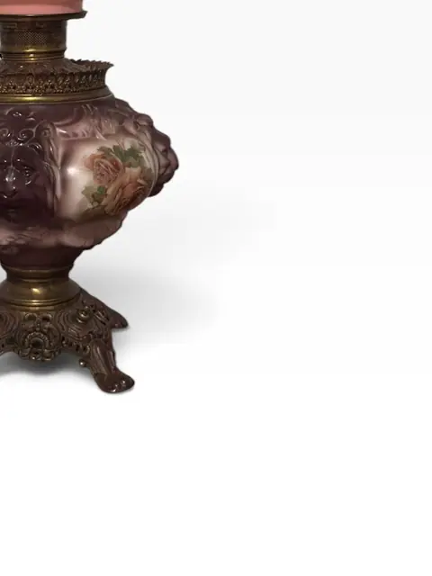
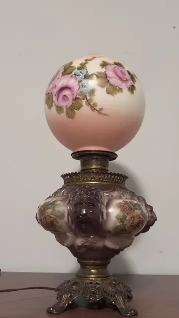
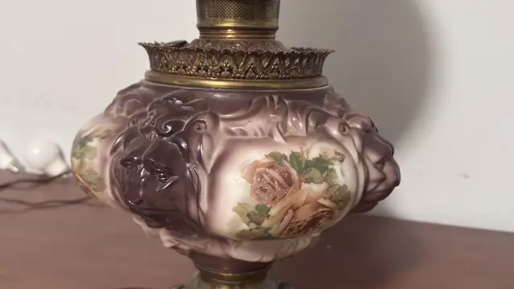
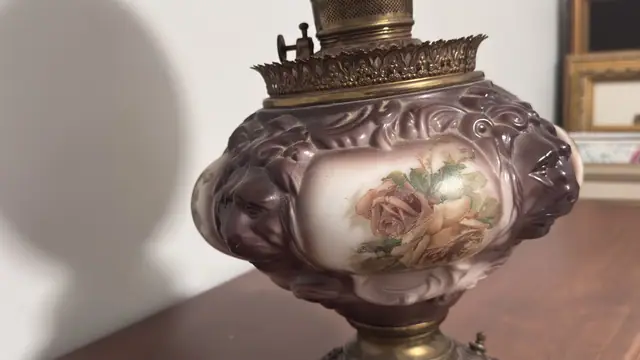
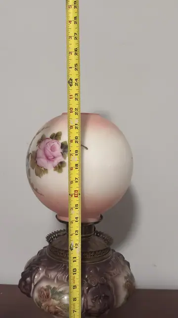
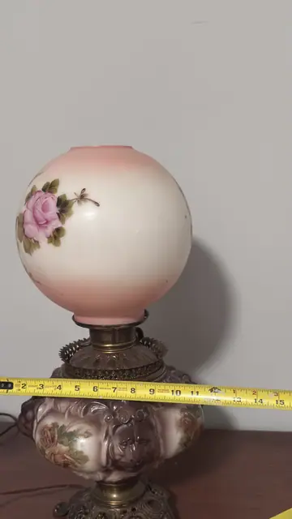

Lighting
Antique-Style 'Gone with the Wind' Lion-Head Parlor Lamp with Hand-Painted Roses
· 20th century
Price Upon Request









About the Item
An antique-style 'Gone with the Wind' parlor lamp, converted from oil to electric, with a hand-painted opaline glass globe shade decorated with pink roses and blue blossoms. The molded glass reservoir is embossed with lion masks and painted with floral reserves, raised on an ornate cast-brass foot. A charming Victorian-revival table lamp, maker unattributed. Partial tape readings only: horizontal tape in 07_orijinal shows reservoir width of approx. 12 in; vertical tape in 06_orijinal does not capture the full lamp height. Overall height and shade diameter not legible. Maker not identified; described as antique-style Victorian parlor lamp.
Details
- Creation Year:
- 20th century
- Medium:
- Molded and hand-painted glass, brass
- Period:
- 20Th
- Condition:
- Offered in the condition shown in the photographs.
- Reference Number:
- VO-342